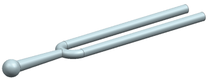
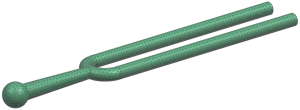
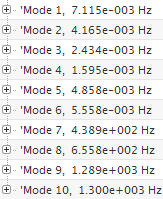
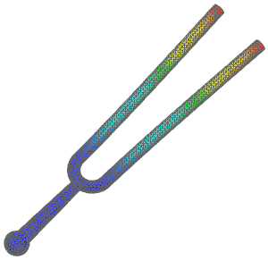

Modal analysis determines the natural frequencies and mode shapes of structures. Advanced Simulation can perform modal analysis on unconstrained, constrained, and prestressed structures.
Using the SOL 103 Real Eigenvalues solution sequence, verify that the tuning fork resonates at 440 Hz.

|
Property |
Value |
|
Part |
tuning_fork.prt |
|
Solution sequence |
SOL 103 Real Eigenvalues |
|
Idealization |
See note regarding symmetry |
|
Material |
Steel |
|
Mesh |
CTETRA10 Element size 2 mm |
|
Constraints |
See note regarding constraints |
|
Loads |
None |

Although structural symmetry exists, using symmetry in the model prevents asymmetrical modes from being calculated.
Model the tuning fork as unconstrained. Because it is unconstrained, the first six modes calculated are rigid body modes. Rigid body modes are easy to identify because their natural frequencies are noticeably low. Although we elected to calculate the rigid body modes, you can avoid calculating them by specifying a lower limit to the frequency range of about 1 Hz. To do so, in the Simulation Navigator, edit the solution (Edit→Case Control tab→Create Modeling Object (Lanczos Data)→Frequency Range-Lower Limit→enter 1 Hz).
The ten modes calculated by our model are listed below. The first six modes represent rigid body modes. Therefore, the fundamental natural frequency is about 439 Hz (Mode 7), which corresponds closely with the expected result of 440 Hz.

The mode shape for Mode 7 is animated below.
For a detailed description of how to create this animation, see the Modal analysis activity.

|
Note |
If the tuning fork tines overlap one another in your animation, use the Edit Post View command to reduce the deformation scale. |
For your reference, a completed model for this project is located in the ..\projects\solved_project_models folder.